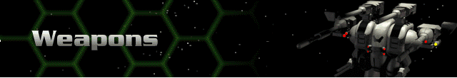

› |
Weapons |

These are all of the weapons which, as you advance through rank, will become available to you. They are categorized by skill type. Following each weapon name is data specific to that weapon category. You will find a data legend at the beginning of each weapon category.
You will also find detailed descriptions and important notes for individual weapons in the Herc Bay and in the Damage Model during your career.